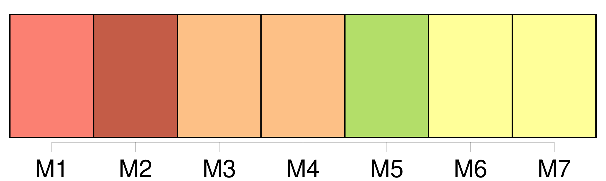
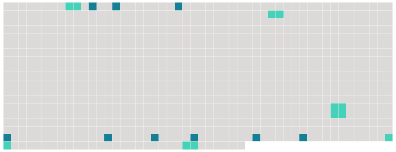

Longueur nb maillons : 15 mentions |
 |
Parfois, on rencontrait sur la grande route [un paysan] dans [sa] carriole. [Il] connaissait grand-père. On montait auprès de [lui] [2 phrases] Grand-père et [l’ homme] causaient, sans s’ occuper de lui. [33 phrases]
» [2 phrases] Il lui semblait qu’ ils étaient fâchés l’ un contre [l’ autre] , et il craignait qu’ ils n’ en vinssent aux coups. [2 phrases] Mais Christophe, qui ne comprenait pas leur conversation, entendait seulement leurs éclats de voix, il voyait leurs traits crispés, et il pensait avec angoisse : « Comme [il] a l’ air méchant!! [1 phrases] Comme [il] roule les yeux!! Comme [il] ouvre la bouche!! [Il] m’ a craché au nez, dans [sa] fureur. [1 phrases] [il] va tuer grand-père …… [1 phrases] [Le paysan] disait : « Vous voilà arrivés. [2 phrases] [Le paysan] lui tendait le petit garçon. |
 |
Il est possible de télécharger la ressource sur la page Ortolang |
Si vous avez des questions ou vous voyez des erreurs, merci d'envoyer un mail à silvia.federzoni89@gmail.com |